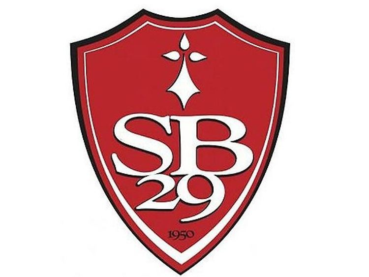

The club was founded in 1950. In its early years, the club achieved a rapid rise in the amateur football hierarchy. The club joined the second division in 1970 then discovered the first division in 1979. In 1991, the club was demoted and returned to the second division in 2004 and Ligue 1 in 2010. In 2018-2019, the club was promoted to the League 1 for the first time since 2013. The team colors, white and red, are taken from an old city flag.


Club president :
Denis Le Saint
He has been president of Brest since May 10, 2016.

Trainer:
Eric Roy
He has been Brest coach since January 3, 2023.
| National competitions |
|---|
| French Championship: 8th in 1987 |
| French league 2 championship: Champion in 1981 |
| Vice champion 1979, 2010, 2019 |
| French national championship: vice champion in 2004 |
| International competitions |
|---|
| French Cup: best quarter-final performance in 1983 and 2015 |
| Gambardella Cup: 1st in 1990 |
| semi-finalist in 1981, 2012, 2016, 2018 |